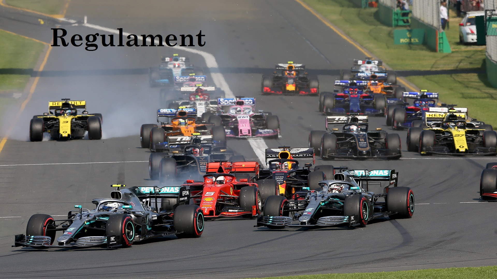
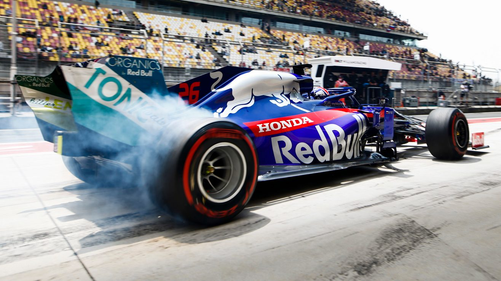
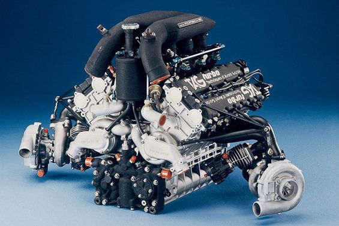
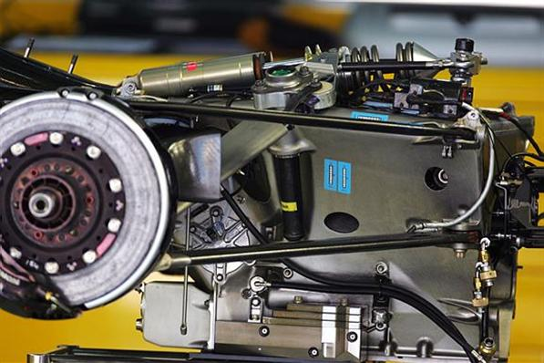
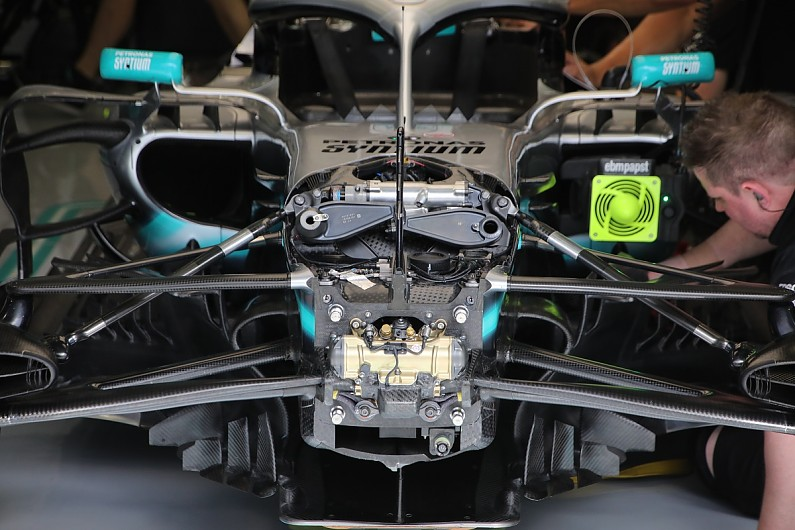
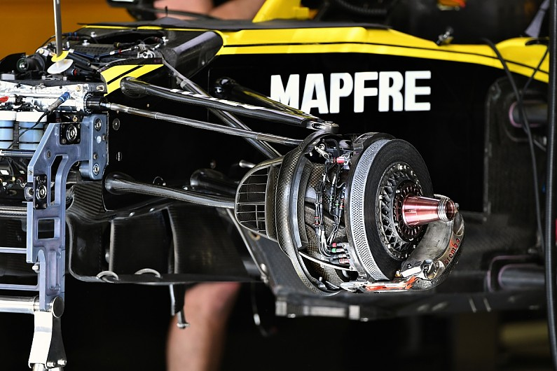
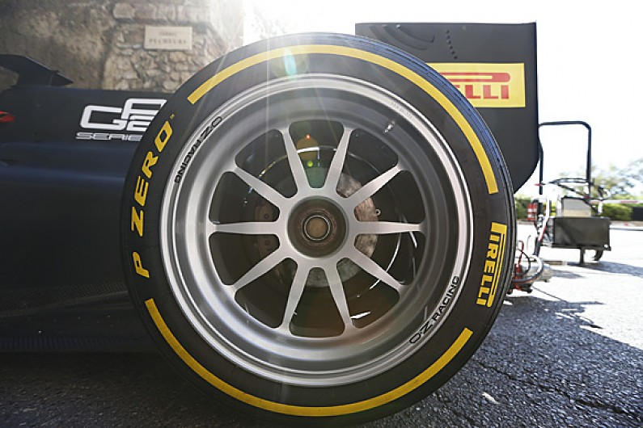
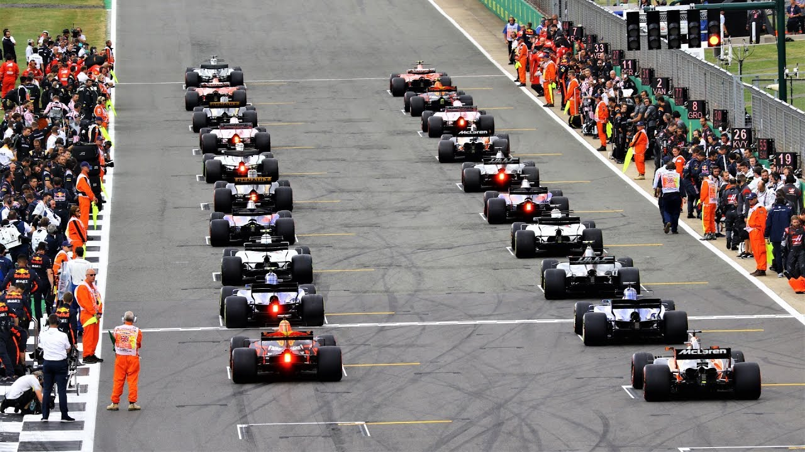
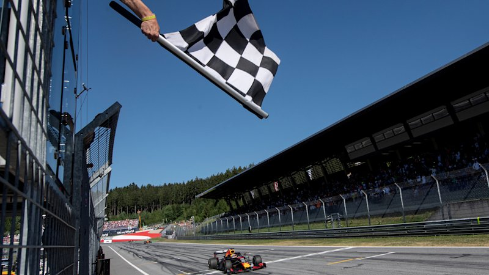

.
.
Regulament Tehnic

Șasiul
- Nicio parte a caroseriei nu poate fi mai mare de 950 mm peste planul de referință.
- Lățimea totală a mașinii, cu excepția anvelopelor, nu trebuie să depășească 2000mm, cu roțile direcționate în poziția dreaptă.
- Lățimea caroseriei între liniile centrale din față și ale roții din spate nu trebuie să depășească 1600mm.
- Greutatea mașinii, fără combustibil, nu trebuie să fie mai mică de 746 kg în timpul evenimentului.
- Dacă, atunci când este necesar pentru verificare, o mașină nu este deja echipată cu anvelope pentru vreme uscată, aceasta va fi cântărită pe un set de anvelope pentru vreme uscată selectate de delegatul tehnic FIA.
.
Motorul
- Motoarele sunt turbo, cu capacitatea cilindrică de 1.600 cmc. Cilindrii sunt în număr de sase, așezați în V la 90 de grade, fiecare cilindru având patru supape.
- Greutatea unui motor trebuie să fie de minimum 145 kg.
- Turația maximă a unui motor nu trebuie să fie mai mare de 15.000 rpm.
- Singura sursă de energie permisă în afară de motor este sistemul de recuperare a energiei cinetice (KERS).

.
Transmisia
- Niciun sistem de transmisie nu poate permite acționarea a mai mult de două roți.
- Nicio mașină nu poate fi echipată cu un sistem sau dispozitiv capabil să împiedice rotile antrenate să se învârte sub putere sau să compenseze cererea excesivă de cuplu a șoferului. Nu este permis niciun dispozitiv sau sistem care să anunțe șoferul la începutul rotirii roților.
- Numărul de trepte de viteză este de de 8.
- Modificările automate ale treptelor de viteză sunt considerate ajutoare pentru șofer și, prin urmare, nu sunt permise. În scopul schimbării vitezei, ambreiajul și cuplul unității de putere nu trebuie să fie sub controlul șoferului.

.
Sistemele de suspensie și direcție
- Mașinile trebuie să fie prevăzute cu suspensie în arcuri.
- Orice dispozitiv alimentat care este capabil să modifice configurația sau să afecteze performanța oricărei părți a unui sistem de suspensie este interzis. Nu se poate face nicio ajustare la niciun sistem de suspensie în timp ce mașina este în mișcare.
- Numărul de trepte de viteză este de de 8.

.
Frânele
- Cu excepția unei Unități de Putere, toate mașinile trebuie să fie echipate cu un singur sistem de frânare. Acest sistem trebuie să cuprindă doar două circuite hidraulice separate operate de o pedală, un circuit care funcționează pe cele două roți față și celălalt pe cele două roți din spate.
- Răcirea frânelor cu lichid este interzisă.
- Nu poate fi proiectat niciun sistem de frânare care să împiedice blocarea roților atunci când șoferul aplică presiune pe pedala de frână.

Roțile
- Roțile trebuie să fie externe caroseriei în plan, cu dispozitivul aerodinamic îndepărtat. Numărul de roți este fixat la patru. Roțile trebuie să fie fabricate din aliaje de magneziu AZ70 sau AZ80.
- Lățimea completă a roții trebuie să fie cuprinsă între 370mm și 385mm atunci când este montată în fața mașinii și între 455mm și 470 mm atunci când este montată pe spate.
- Diametrul complet al roții nu trebuie să depășească 670mm atunci când este echipată cu anvelope pentru vreme uscată sau 680mm atunci când este echipată cu anvelope umede.
- Lățimea și diametrul complet al roții vor fi măsurate orizontal la înălțimea osiei, cu roata ținută în poziție verticală și atunci când este echipată cu anvelope noi umflate la 1,4 bar.
- Toate anvelopele trebuie utilizate de la furnizor, orice modificare sau tratament, cum ar fi tăierea, canelarea, aplicarea solvenților sau a emolenților este interzisă. Aceasta se aplică anvelopelor uscate, intermediare și umede.

Regulament Sportiv
- Piloții trebuie să fie deținătorii unei superlicențe, care este valabilă un an. FIA poate oricând suspenda sau anula superlicența unui pilot.
- La fiecare cursă există următorii oficiali: un director de cursă, un comisar permanent care supervizează procedura de start, trei comisari adiționali (unul fiind ales șef) posesori ai unei licențe FIA, un secretar de cursa și un comisar din partea țării organizatoare
- În timpul unui singur sezon, o echipă nu poate folosi mai mult de patru piloți.
- Cele două mașini ale unei echipe trebuie să fie vopsite identic.
- Emblema echipei trebuie să apară în partea frontală a mașinii, iar numele pilotului în zona cockpit-ului.
- Testele private se pot face doar pe circuite aprobate de FIA și sunt limitate la 15.000 de kilometri.
- La finalul sesiunii de calificări toate monoposturile trebuie duse într-un Parc Închis până a doua zi dimineața, personalul echipelor neavând dreptul să facă modificări la mașini. Mașinile care termină cursa sunt și ele parcate în Parcul Închis.
- Piloți nu pot avea disponibile mai mult de două mașini în același moment. Mașina nu se poate schimba după startul cursei.
- Fiecare pilot are dreptul să folosească doar trei motoare pe tot parcursul sezonului. Dacă utilizează mai multe motoare atunci pilotul va primi penalizari pe grila de start.
- Fiecare pilot are dreptul să folosească o singură cutie de viteze pe parcursul a patru curse. În cazul unei schimbări neprogramate, pilotul va primi o penalizare de cinci poziții pe grila de start.
- Nu este permisă realimentarea (începând din sezonul 2010).
Procedura de start a cursei
- Piloții pot începe turul de recunoaștere cu 30 de minute înainte de startul în turul de încălzire. Dacă un pilot dorește să facă mai mult de un tur de recunoaștere este obligat să treacă pe la boxe, fără a opri, dar cu obligația de a respecta viteza maximă permisă. Dacă pilotul face un singur tur, la finalul acestuia își așează mașina pe grilă, pe locul de start și oprește motorul.
- Dacă o mașină nu este pe grila de start cu 15 minute înainte de startul în turul de încălzire, accesul ei nu mai este permis, pilotul putând însă să plece în cursă de pe linia boxelor.
- Cu zece minute înainte de startul în turul de încălzire toată lumea, cu excepția piloților, a oficialilor și a membrilor echipelor trebuie să părăsească zona grilei.
- Cu trei minute înainte de startul în turul de încălzire roțile trebuie fixate, în caz contrar pilotul primind o penalizare de 10 secunde.
- Cu un minut înainte de startul în turul de încălzire motoarele trebuie pornite, iar personalul echipelor mai are la dispoziție 45 de secunde să părăsească grila.
- Plecarea în turul de încălzire trebuie să se facă încet, depășirile fiind interzise, acestea din urmă fiind totuși permise dacă o mașină nu poate pleca de pe grilă, iese în afara grilei în timpul turului de încălzire sau are o poziție staționară pe pistă.
- La finalul turului de încălzire piloții își reiau poziția pe grilă și așteaptă startul.
.
.
.
Steagurile comisarilor de cursă
- Steagul roșu înseamnă că antrenamentul, sesiunea de calificări sau după caz cursa au fost oprite,iar pilotul este obligat să se retragă la boxe.
- Steagul galben înseamnă pericol pe circuit, orice depășire fiind interzisă.
- Steagul verde înseamnă că totul e în regulă.
- Steagul albastru obligă un pilot mai lent să se lase depășit de pilotul din spatele lui.
- Steagul alb indică prezența pe pistă a unui vehicul, altul decât o mașină de Formula 1, piloții trebuind să încetinească. Steagul alb însoțit de o placă cu însemne SC indică prezența safety carului pe pistă.
- Steagul negru cu un număr alăturat indică faptul că pilotul posesor al acelui număr a fost descalificat și trebuie să se retragă din cursă.
- Steagul jumătate alb, jumătate negru cu un număr alăturat indică faptul că un pilot are un comportament nesportiv și că riscă descalificarea.
- Steagul negru cu un punct portocaliu cu un număr alăturat indică faptul că telemetria indică o problemă, iar pilotul trebuie să meargă la boxe.
- Steagul în dungi galbene și roșii indică că pista este alunecoasă, iar piloții trebuie să fie atenți.
- Steagul cu pătrățele negre și albe, tip șah, indică finalul cursei.
- Steagul roșu indică faptul că piloții trebuie să oprească la boxe deoarece cursa este oprită din motive tehnice.
- Steagul galben interzice orice depășire.
.
.
.
.
